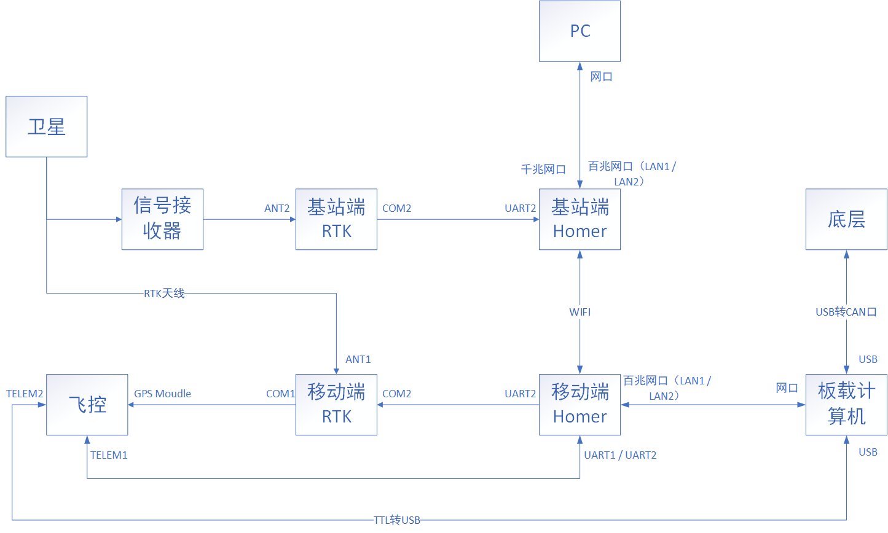
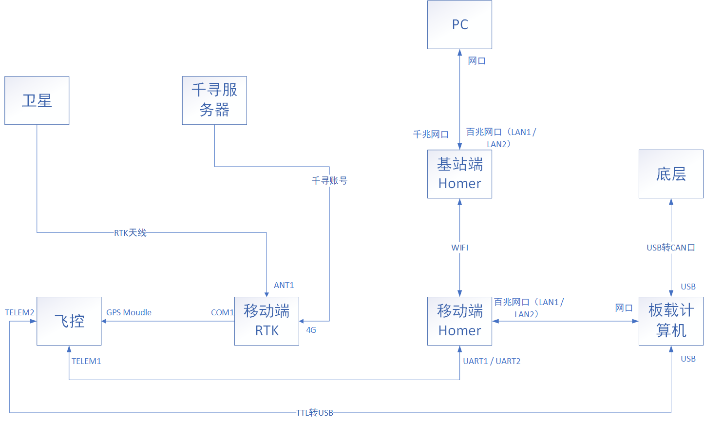

通信链路
AutoPilot 基站版通信链路
注解
图数传Homer作为整个通信链路的核心，将各个模块通过 有线/无线 的方式连接起来。
PC和板载计算机通信主要通过以下链路: PC<===有线===>基站端Homer<===WIFI===>移动端Homer<===有线===>板载计算机 。其目的是通过远程软件登录到板载计算机，然后通过板载计算机启动相关程序，进而控制车辆。
PC和飞控通信主要通过以下链路: PC<==有线===>基站端Homer<===WIFI===>移动端Homer<===串口===>飞控 。其目的是通过PC端上的Mission Planner连接到飞控，从而获取飞控相关参数。
飞控如何获取卫星数据:首先，移动端RTK会通过ANT1口天线接收卫星信号；然后再接收来自基站端RTK的纠偏数据，其通信链路为 基站端RTK<===透传===>基站端Homer<===WIFI===>移动端Homer<===透传===>移动端RTK。接着，移动端RTK就会将这个两个来源的数据进行融合，最后将融合后的数据，通过串口的方式，传递到飞控的GPS Moudle口。从而实现了飞控的定位。
R300 移动版通信链路
注解
移动版通信和基站版通信不同之处在于， 不通过基站RTK 获取纠偏数据，而是通过千寻账号登录到其服务器，然后再由服务器进行位置解算，位置解算后，通过4G网络返回到移动版RTK。